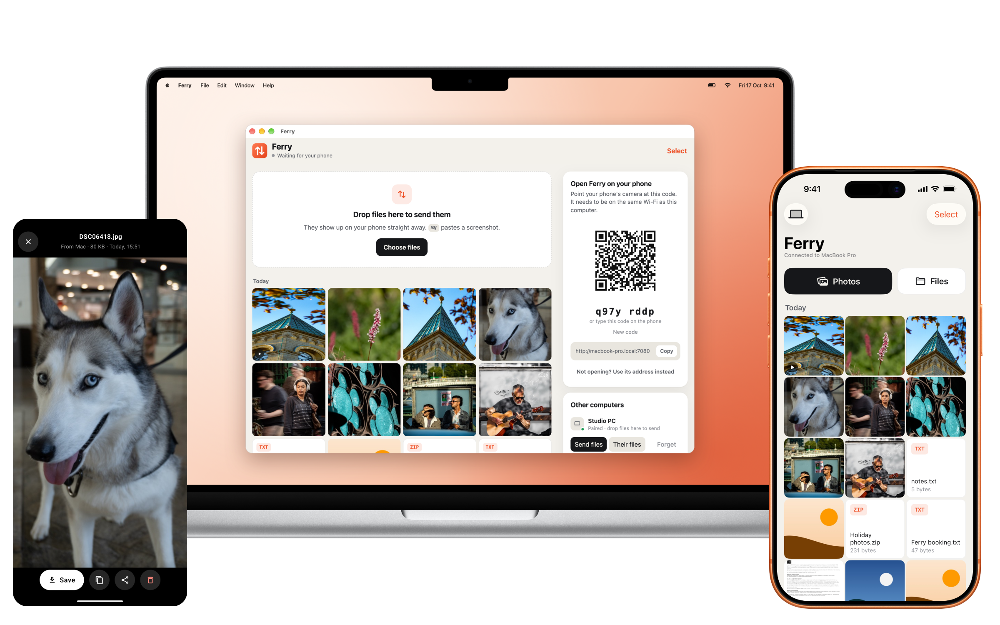
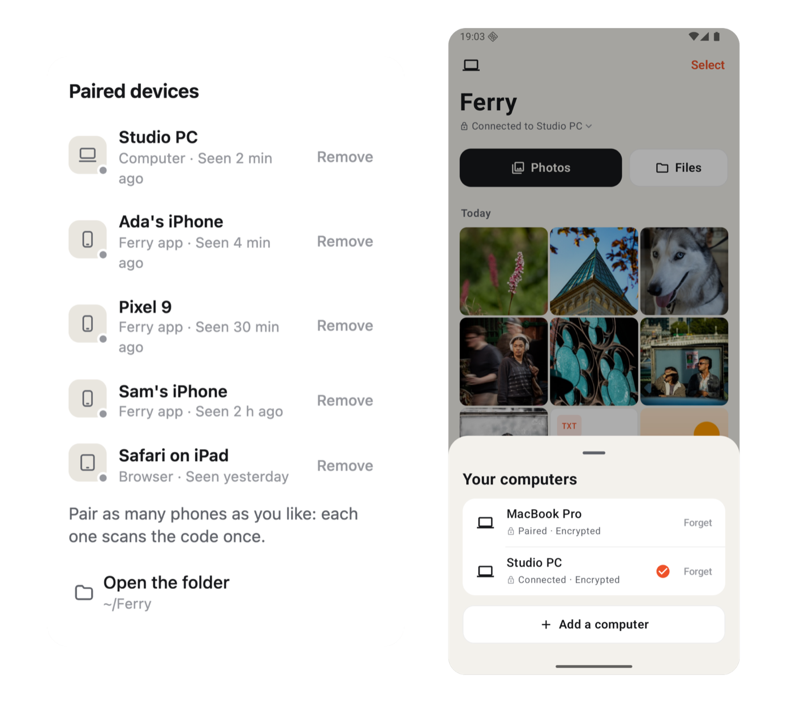
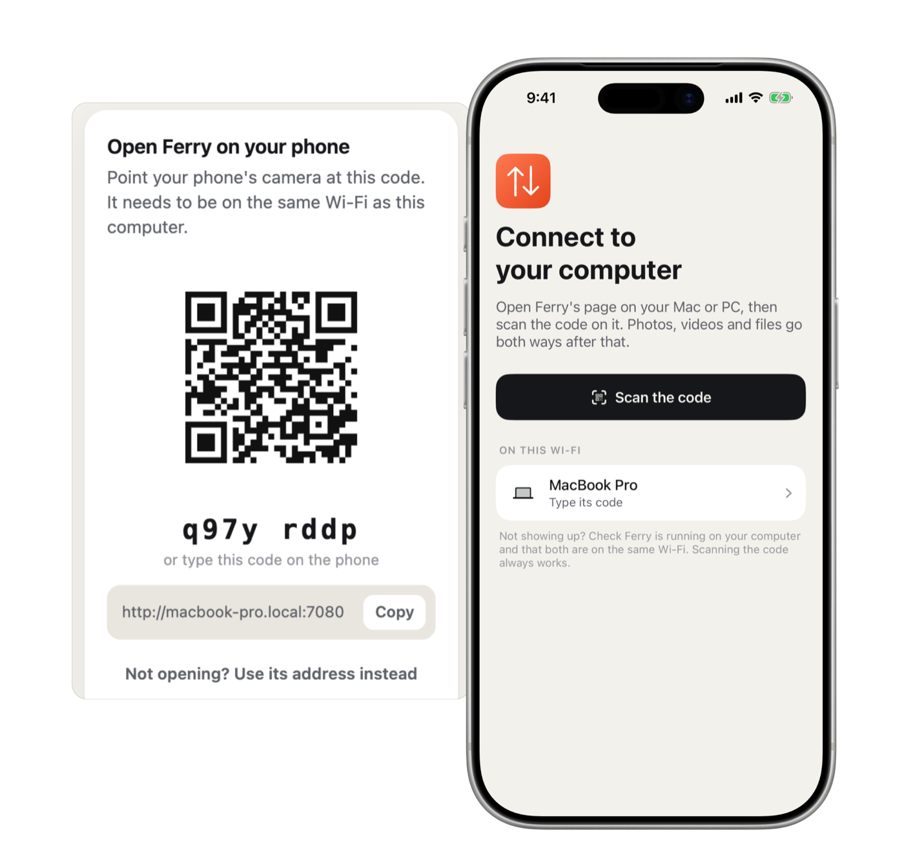
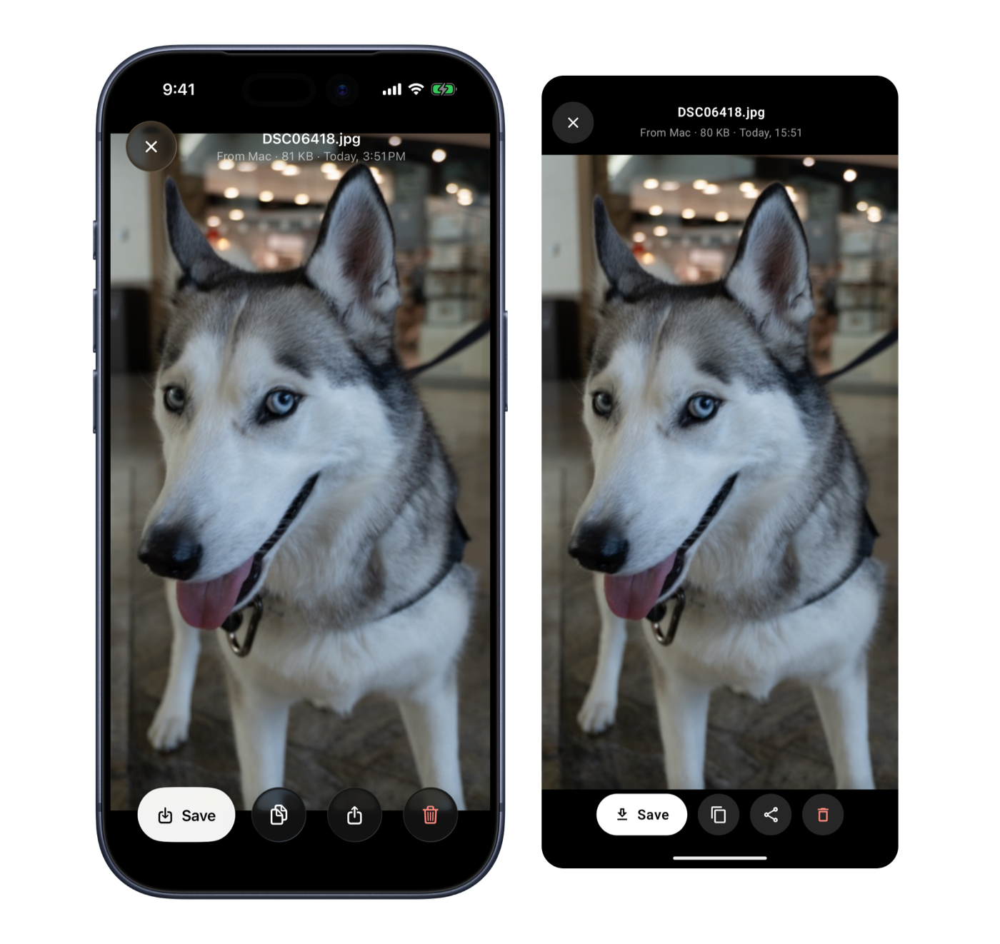
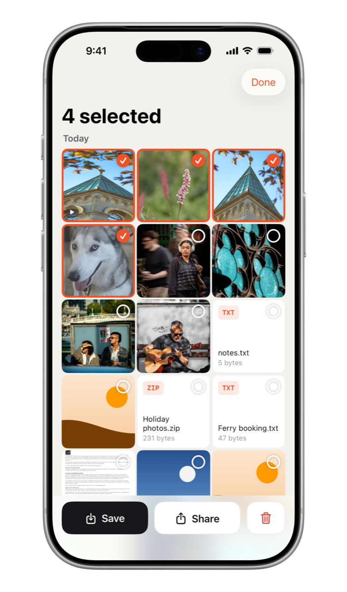

From your phone
Pick photos and videos, or share from any app. They land on your computer in seconds, as the originals.
Ferry sends photos, videos and files between all your phones and computers over Wi‑Fi, encrypted. Full quality, no cables, no cloud, no account.

Ferry is an app on your computers and your phone. Pair them once and files cross in seconds.
Pick photos and videos, or share from any app. They land on your computer in seconds, as the originals.
Drop files on Ferry or paste a screenshot. They’re on your phone before you’ve picked it up.
Mac to Windows, Windows to Linux. Pair two computers once, then drop files on one to send them to the other.
Pair as many as you like. Your phone works with your Mac at home and your PC at work, and the whole family’s phones can share the computer in the living room.

AirDrop is great when every device is Apple’s and both are awake at the same moment. Ferry works with every phone and computer, and your files wait for you.
| AirDrop | Ferry | |
|---|---|---|
| Mac and iPhone | ||
| Windows and Linux | – | |
| Mac to Windows PC | – | |
| Android phones | – | |
| Send now, pick it up later from your phone | – | |
| Everything you’ve sent, in one place | – | |
| Paste a screenshot to send it | – | |
| No Bluetooth needed | – |
Ferry shows a code on your computer. Point your phone at it and you’re connected, today and every day after. Got a computer at work too? Add it as well and switch with a tap.


Tap Save and photos and videos go into Photos or your gallery, in full quality, with their dates and places. Or tap Copy and paste the photo into any chat.
Select as many as you like and save or share them together. Sending a hundred photos from your phone is just as quick.

iPhone to Windows, Android to Mac. Every pairing works.
Originals, never squeezed. HEIC, RAW and 4K video come through untouched.
Share from Photos, Files or any app and choose Ferry.
Long videos and big files are fine. Ferry streams them straight to disk.
Just the same Wi‑Fi. Ferry works even when the internet is down.
No app on that phone? Scan the code with its camera and use Ferry right there.
On café, hotel or office Wi‑Fi, nobody else on the network can see what you send: the apps encrypt everything, from your phone to your computer and between computers. Scanning the code checks it’s really your computer, not something pretending to be it. And nobody gets in without the code on your screen.
Use the Ferry apps on public Wi‑Fi: a phone’s browser connects without encryption. Some public networks keep devices from seeing each other; your phone’s hotspot works instead.
Mac, Windows or Linux. Open it and it shows a code.
The app for Android, or your phone’s browser. The iPhone app is on its way.
Your phone and computer are paired. Send away.